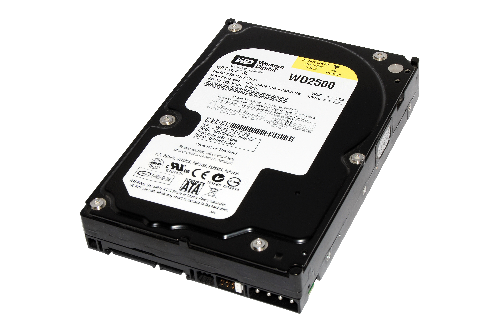
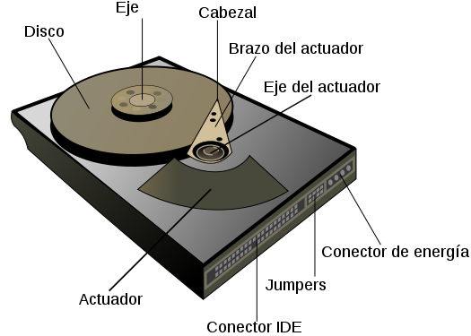

En informática, la unidad de disco duro o unidad de disco rígido (en inglés: Hard Disk Drive, HDD) es el dispositivo de almacenamiento de datos que emplea un sistema de grabación magnética para almacenar archivos digitales. Se compone de uno o más platos o discos rígidos, unidos por un mismo eje que gira a gran velocidad dentro de una caja metálica sellada. Sobre cada plato, y en cada una de sus caras, se sitúa un cabezal de lectura/escritura que flota sobre una delgada lámina de aire generada por la rotación de los discos. Es memoria no volátil.
El primer disco duro fue inventado por IBM, en 1956. A lo largo de los años, han disminuido los precios de los discos duros, al mismo tiempo que han multiplicado su capacidad, siendo la principal opción de almacenamiento secundario para computadoras personales, desde su aparición en los años 1960.1 Los discos duros han mantenido su posición dominante gracias a los constantes incrementos en la densidad de grabación, que se ha mantenido a la par de las necesidades de almacenamiento secundario.
Los tamaños también han variado mucho, desde los primeros discos IBM hasta los formatos estandarizados actualmente: 3,5 pulgadas los modelos para PC y servidores, y 2,5 pulgadas los modelos para dispositivos portátiles. Todos se comunican con la computadora a través del controlador de disco, empleando una interfaz estandarizada. Los más comunes hasta los años 2000 han sido IDE (también llamado ATA o PATA), SCSI (generalmente usado en servidores y estaciones de trabajo). Desde el 2000 en adelante ha ido masificándose el uso de los SATA. Existe además FC (empleado exclusivamente en servidores).
Para poder utilizar un disco duro, un sistema operativo debe aplicar un formato de bajo nivel que defina una o más particiones. La operación de formateo requiere el uso de una fracción del espacio disponible en el disco, que dependerá del sistema de archivos o formato empleado. Además, los fabricantes de discos duros, unidades de estado sólido y tarjetas flash miden la capacidad de los mismos usando prefijos del Sistema Internacional, que emplean múltiplos de potencias de 1000 según la normativa IEC e IEEE, en lugar de los prefijos binarios, que emplean múltiplos de potencias de 1024, y son los usados por sistemas operativos de Microsoft. Esto provoca que en algunos sistemas operativos sea representado como múltiplos 1024 o como 1000, y por tanto existan confusiones, por ejemplo un disco duro de 500 GB, en algunos sistemas operativos será representado como 465 GiB (es decir gibibytes; 1 GiB = 1024 MiB) y en otros como 500 GB.
 
{kind=link}
{kind=link}